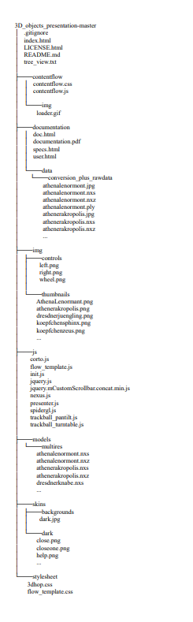
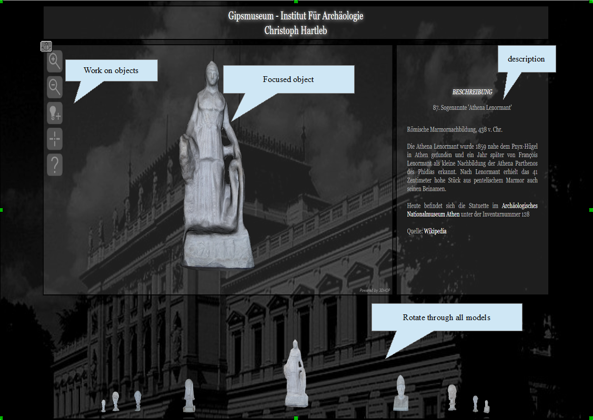

In the course of the master study Digital Humanities at the Karl Franzens University of Graz it was possible
to design and create this project within the framework of the project seminar.
It is about digital presentation of 3D models of some selected plaster busts from the Plaster Museum of the Institute of Archaeology.
The creation of the digital 3D objects was made according to the method of Photogrammetry.
The project serves as a final testimony of the knowledge and skills acquired during the course of study.
The target group for this page are those persons who are interested in the plaster busts from the Plaster Museum of the
Institute of Archaeology and all participants of the seminar.
Christoph Hartleb - Project Manager, Designer, Developer - christophhartleb@gmx.at
The goal of the project is to present the busts and provide access to metadata about them.
Phase 1 – Photographing the busts in the plaster museum
Phase 2 – Creation of 3D digital models with Agisoft, Mehslab and Nexus software
Phase 3 – Online presentation with 3DHOP
Phase 4 – Embedding the models into the website
Details of the phases can be viewed here (German only).

Creation date: 540/550 v. Chr.
Creation date: 560/550 v. Chr.
Creation date: No date
Creation date: 460/450 v. Chr.
Creation date: 420/10 v. Chr.
Creation date: 4. Jh. v. Chr.
Creation date: 560/50 v. Chr.
Creation date: 480 v. Chr.
Creation date: 438 v. Chr.
Creation date: No date
Creation date: 520 v. Chr.
Creation date: 520/10 v. Chr.
Creation date: 477/476 v. Chr.
Creation date: 490 v. Chr.
Creation date: 440/432 v. Chr.
Creation date: No date
No taxonomies were necessary.
The website is a single page application and therefore a template was not necessary.
Design was used from the following template: https://www.3dhop.net/demo.php.

To ensure web accessibility the Web Content Accessibility Guidelines (WCAG) was followed.
Websites can be viewed on the Google Chrome Web Browser.
For github sites, the hosting requirements can be found here: https://docs.github.com/en/pages/getting-started-with-github-pages/about-github-pages
How a website can be hosted on github can be found here: https://gist.github.com/TylerFisher/6127328
Updates, maintenance and support will be provided and executed by Christoph Hartleb.
Throughout all development phases Christoph Hartleb is repsonsible for executing, supervising and testing every feature implementation and the site itself.
04/2019 - Fotos im Gipsmuseum der Büsten
04/2019 - Erstellung der digitalen 3D Modelle
05/2019 - Development (Front and Back-end) of website
05/2019 - Integrating of models into site
06/2019 - Testing and feedback
06/2019 - Live presentation
No budget was necessary at any phase of the project. All resources necessary to realize the project were provided by the Karl Franzens University of Graz.